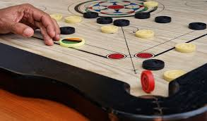

1.CHESS

Chess is one of the oldest and most popular board games. It is played by two opponents on a checkered board with specially designed pieces of contrasting colours, commonly white and black. The objective of the game is to capture the opponent's king.Chess is an abstract strategy game that involves no hidden information and no elements of chance. It is played on a chessboard with 64 squares arranged in an 8×8 grid. The players, referred to as "White" and "Black", each control sixteen pieces: one king, one queen, two rooks, two bishops, two knights, and eight pawns. White moves first, followed by Black. The game is won by checkmating the opponent's king, i.e. threatening it with inescapable capture. There are several ways a game can end in a draw
Click Here to
2.Table Tennis
Table tennis (also known as ping-pong or whiff-whaff) is a racket sport derived from tennis but distinguished by its playing surface being atop a stationary table, rather than the court on which players stand. Either individually or in teams of two, players take alternating turns returning a light, hollow ball over the table's net onto the opposing half of the court using small rackets until they fail to do so, which results in a point for the opponent. Play is fast, requiring quick reaction and constant attention, and is characterized by an emphasis on spin relative to other ball sports, which can heavily affect the ball's trajectory.
Click Here to Virtual
3.Carrom
Carrom is a tabletop game of Indian origin in which players flick discs, attempting to knock them to the corners of the board. In South Asia, many clubs and cafés hold regular tournaments. Carrom is commonly played by families, including children, and at social functions. Different standards and rules exist in different areas. The game of carrom originated in India. One carrom board with its surface made of glass is still available in one of the palaces in Patiala, India. State-level competitions were being held in the different states of India during the early part of the 20th century. Serious carrom tournaments may have begun in Sri Lanka in 1935; by 1958, both India and Sri Lanka had formed official federations of carrom clubs, sponsoring tournaments and awarding prizes.
Play online version at
4.UNO
UNO is a multi-player card game in which the objective is to be the first player to get rid of all the cards in their hand. Each player is dealt 7 cards and players take turn drawing cards from the deck. If a player has a card in their hand matching the card they drew from the deck, they can play that card (helping to reduce the total cards in their hand). If the player doesn't have a matching card in their hand, they must draw another card from the deck to add to their hand, which increases the total number of cards they need to get rid of to win. When a player has only one card left in their hand, they must yell "UNO!," but if an opposing player notices before the original player has a chance to say "UNO," the original player must draw four more cards.
Play online version
Snakes and Ladders

Snakes and ladders is a board game for two or more players regarded today as a worldwide classic. The game originated in ancient India as Moksha Patam, and was brought to the United Kingdom in the 1890s. It is played on a game board with numbered, gridded squares. A number of "ladders" and "snakes" are pictured on the board, each connecting two specific board squares. The object of the game is to navigate one's game piece, according to die rolls, from the start (bottom square) to the finish (top square), helped by climbing ladders but hindered by falling down snakes.